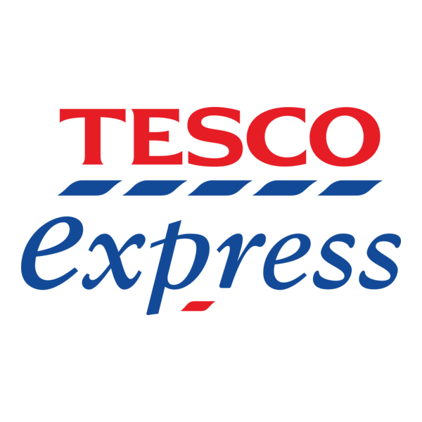
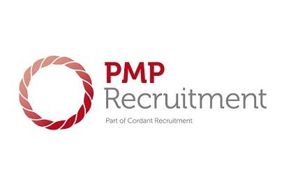

BSc (Hons)
Software Engineering
The University of Bolton · 2:1
Interactive curriculum vitae
Enterprise Support Engineer × SaaS Support × UI/UX in progress
Enterprise Support Engineer with over three years of experience supporting ConnexAI/CXM SaaS environments across 1st-line and enterprise support. I combine calm incident ownership, SQL-led investigation, Linux troubleshooting, clear client communication, and a Software Engineering foundation with a growing UI/UX practice.
Professional experience
Select a role to see responsibilities, achievements, and the tools used.
I respond to user inquiries, incidents, and service requests, providing timely and accurate solutions for hardware, software, application, network, reporting, integration, and telephony-related issues. I act as the first point of contact for complex technical problems escalated from 1st-line support.
I analyse, diagnose, and resolve problems through a structured investigation using SQL, PostgreSQL, MySQL, Linux/SSH, platform evidence, admin tooling, and remote troubleshooting. Unresolved backend issues are escalated to infrastructure or development with clear reproduction steps and client impact.
I maintain accurate ticket records, technical findings, solutions, and troubleshooting steps. I contribute to knowledge-base guidance, user documentation, and repeatable procedures that improve support quality and team efficiency.
Supported clients by phone, email, live chat, and portal from initial triage through resolution or escalation. Monitored system health, maintained evidence-rich tickets, used remote sessions, and guided clients through fixes and Knowledge Base material.
Completed structured technical-support and software-development training across operating systems, networking, troubleshooting, support processes, and practical problem solving.

Customer Service RepresentativeTesco · March 2018–March 2023Delivered customer service in a high-volume environment and worked as a Step-up colleague supporting shift leadership, accuracy, standards, and day-to-day issue resolution.

Contact Centre AgentPMP Recruitment · August–December 2018Supported Amazon recruitment activity by contacting applicants, providing clear location and interview guidance, and maintaining a professional contact-centre experience.
Designed logos, banners, and client-facing visual assets, building an early foundation in visual communication and translating feedback into finished work.
Skills explorer
Choose a category, then expand any skill for context.
Endpoint validation, request testing, response inspection, and API-led troubleshooting.
Daily query validation, reporting investigation, data mapping, and evidence-led issue diagnosis.
Data investigation and structured SQL checks used during technical support workflows.
ConnexAI/CXM, CNX1, dialler management, queues, campaigns, extensions, recordings, and voice investigations.
Remote investigation, service checks, log-led troubleshooting, SFTP/WinSCP, and pm2 awareness.
Mapping, transformation checks, payload inspection, and integration troubleshooting.
Integration scenarios, endpoint checks, automation context, and clear escalation evidence.
Incident triage, stakeholder updates, evidence capture, documentation, and resolution ownership.
Interactive web behaviour, debugging, and front-end implementation.
Component-led interface development and structured front-end learning.
Full-stack JavaScript foundations and server-side application concepts.
Document data modelling and full-stack development foundations.
Programming fundamentals, automation thinking, and technical problem solving.
Responsive, accessible page structure and visual implementation.
Education
The University of Bolton · 2:1
ICT Systems and Principles · Distinction
Certifications & development
Evidence in the portfolio